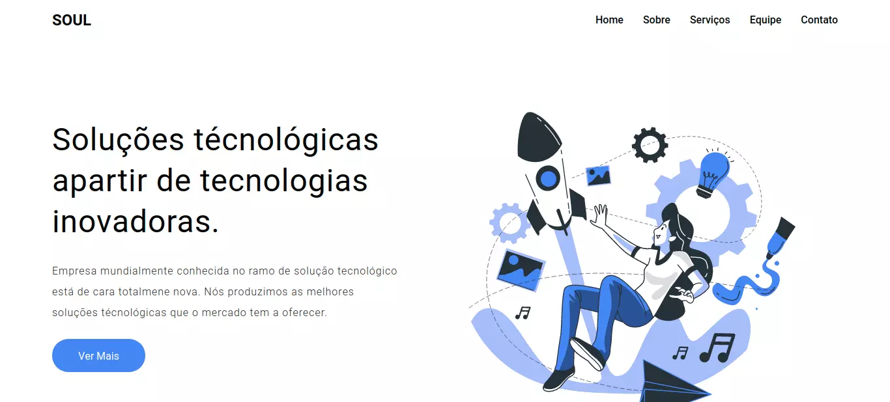
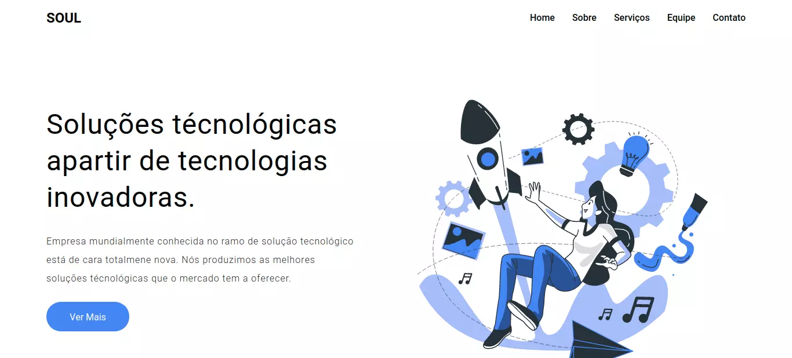

Sobre mim

Estava no último ano do ensino médio quando percebi meu amor por programação e códigos. Após concluir o ensino básico, ingressei na faculdade de Ensino superior Estácio, onde curso atualmente Análise e Desenvolvimento de Sistemas(2° Periodo).
Atravessando lógica de programação e diversos cursos, amei o Front-End e decidi que daria meu melhor para sempre fazer um ótimo trabalho.

 
